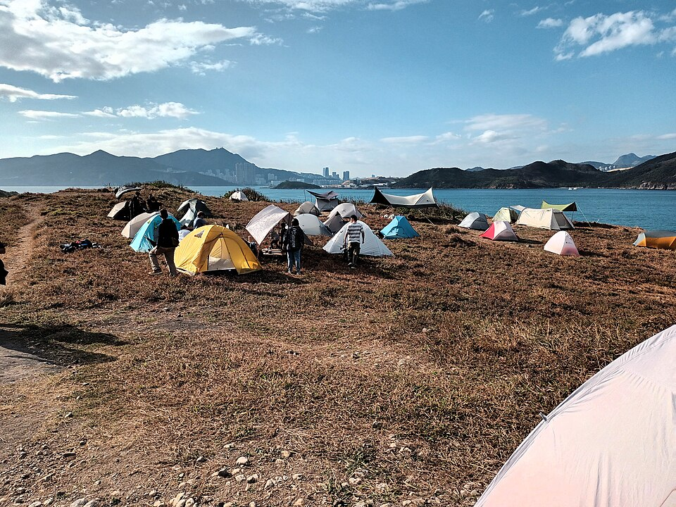
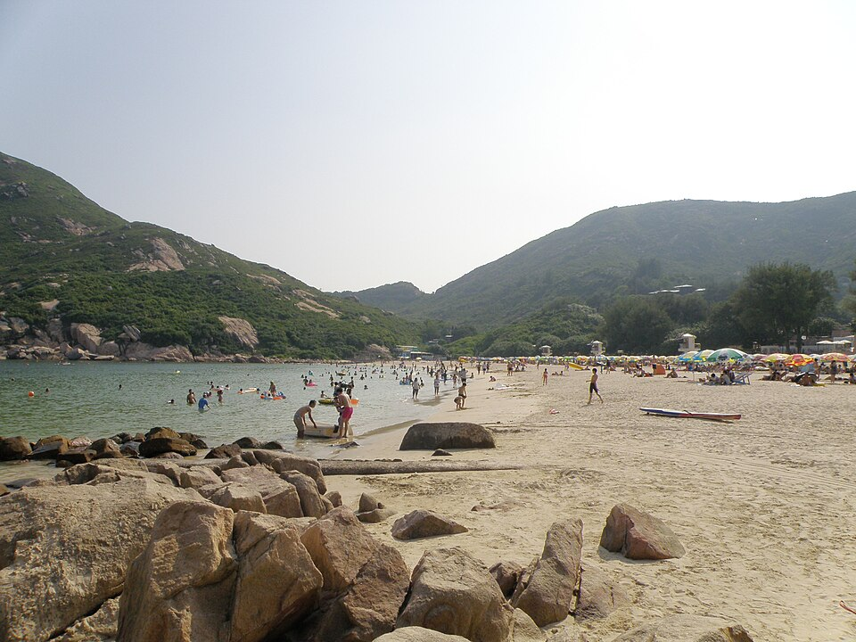
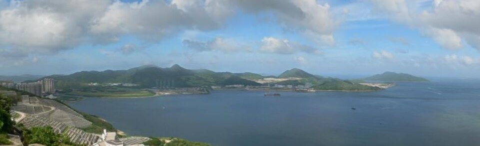
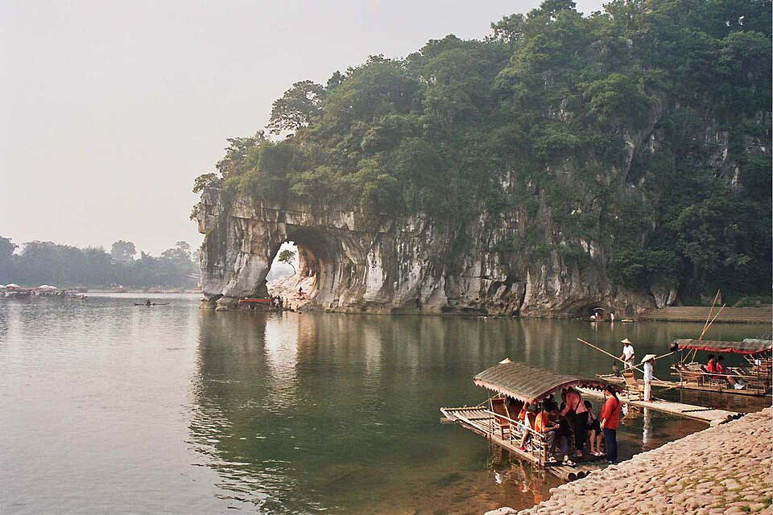
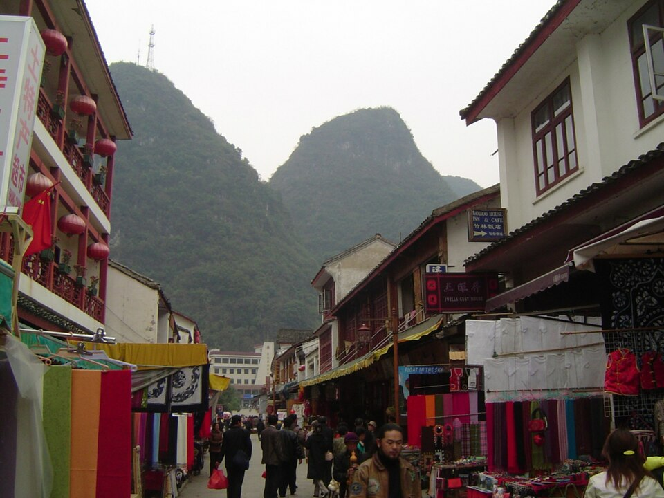
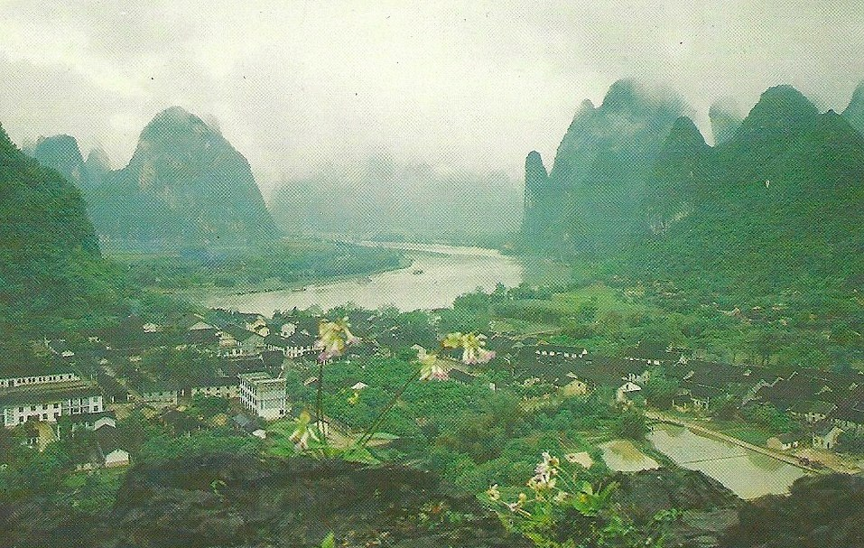
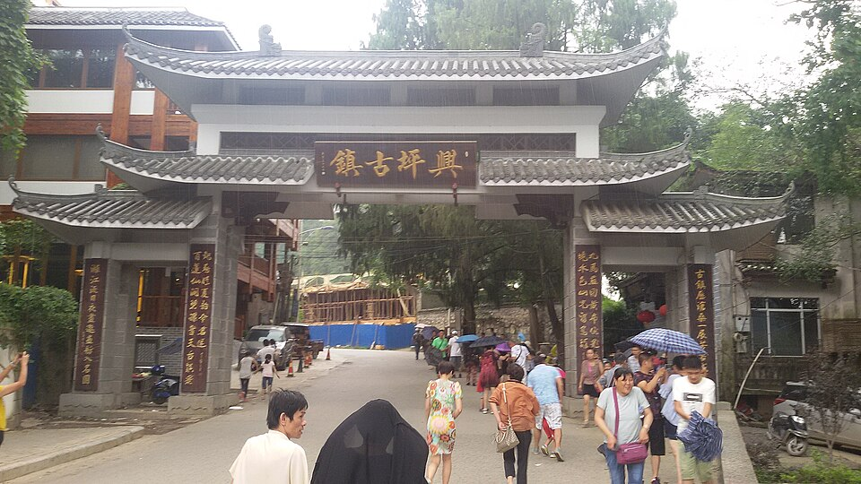
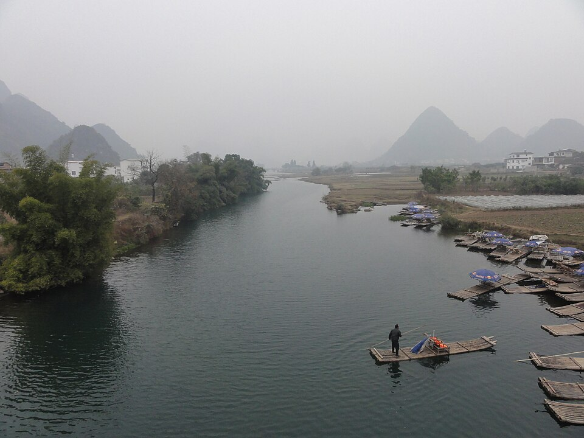
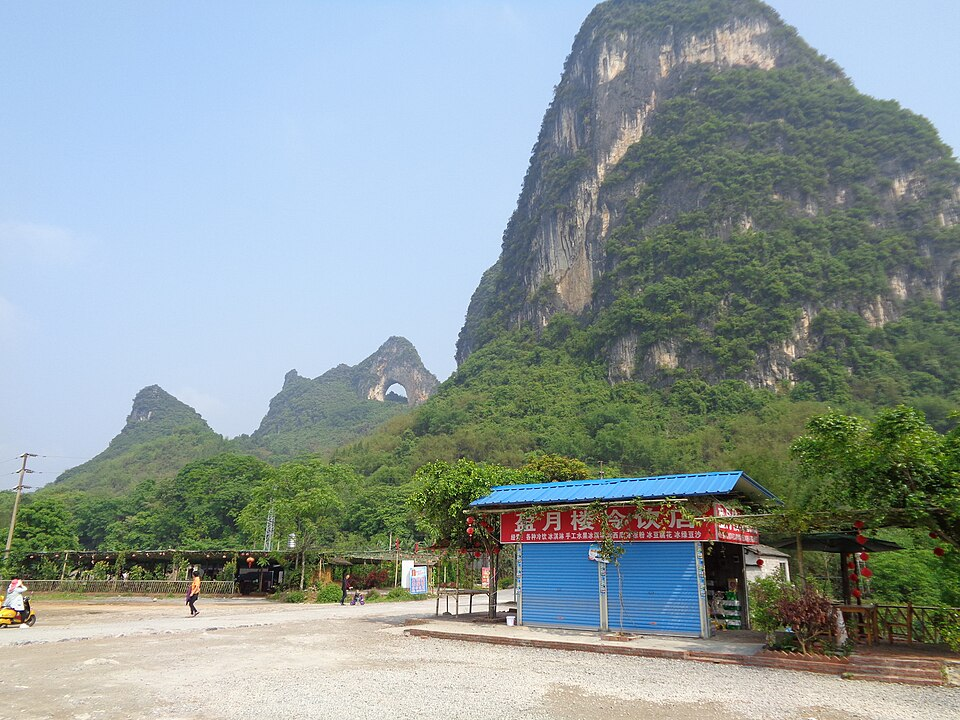
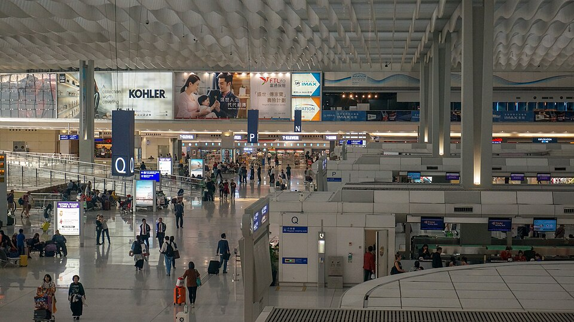

24 października
sobota · SEA
Lot
- Wylot z Seattle 11:45
- Noc w powietrzu (przelot SEA→HKG)
Planer dla Krystiana i żony — pierwszy raz w tej części Azji. Jedziemy z rodziną do Guilin 29–31 X. Wspinaczka w Hongkongu: 26–27 X. Wesele kuzynki 1 XI w Sha Tin. Opcje A/B/C dotyczą tylko wieczoru 25 X i pełnego dnia 28 X.
HKG jest ~15 h do przodu względem Seattle (późny X, PDT); po końcu DST w USA ~16 h.
Lot na zachód SEA→HKG zwykle łatwiejszy. Rano wychodźcie na światło dzienne (outdoor) — pomaga przestawić zegar.
Przylot 25 X ~16:45: zostańcie do wieczora HKT (nie idźcie spać od razu). Outdoor 26–27 X + zwiedzanie 28 X pomagają dogonić rytm.
Kolory w kalendarzu i na mapie.
Sztywny kręgosłup: 25 X przylot · 26–27 X wspinanie · 28 X zwiedzanie · 29–31 X Guilin · 1 XI wesele · 2 XI wylot.
Guilin 29–31 X i wspinaczka 26–27 X są zablokowane. Opcje A/B/C różnią tylko wieczór przylotu, pełny dzień 28 X i ewentualnie lekki poranek 1 XI.
Wieczór 25 X + pełny 28 X: Peak, Star Ferry, dim sum, rynki. Hotel w mieście (Island / Kowloon). 26–27 X skała, 29–31 X Guilin — bez zmian.
🧗 26–27 X · wspinanie — plan osobno. Ten wariant nie rusza skały ani Guilin.
Wieczór 25 X lekko przy harbour. Cały 28 X na Lantau: Ngong Ping 360, Tian Tan Buddha, Po Lin. 26–27 X skała, 29–31 X Guilin — bez zmian.
🧗 26–27 X · wspinanie — plan osobno. 28 X to dzień wyspy, nie skały.
Hotel Tai Wai / Sha Tin / Fo Tan od 25 X (albo przynajmniej na 28 X + powrót z Guilin). 28 X spokojny dzień NT + rekonesans hotelu weselnego. 1 XI: 10–15 min do Regal Riverside.
🧗 26–27 X · wspinanie — plan osobno. Lion Rock / Kowloon Peak są wygodne z bazy NT.
Sha Tin / Regal Riverside — bez osobnego zdjęcia; baza NT = krótki dojazd na wesele (Tai Chung Kiu Rd).
Realistyczne day-trips z miasta. Macie guidebook — poniżej dostęp (MTR + bus/taxi) i krótkie notatki. Koniec października zwykle sucho i chłodniej; sprawdzajcie ostrzeżenia tajfunowe HKO.
Ikoniczny grzbiet nad Kowloon. Sport + trad według sektora; świetne widoki na miasto. Klasyczny „pierwszy dzień” z guidebooka.
Wiele sektorów, dobre na cały dzień. Widoki na harbour z wysokości. Dojazd łatwiejszy taksówką pod Fei Ngo Shan Road; wracajcie przed zmrokiem — droga kręta.

Skały nad morzem na wschodzie HK Island. (zdjęcie: wschodnie wybrzeże HK) Sportowe drogi, klimat „ocean cliff”. Dobrze łączy się z Shek O.

Plaża + sektory w okolicy. (zdjęcie ilustracyjne plaży) Po wspinaczce fish & chips / cold drink w wiosce. Łatwy „recovery day” klimatycznie.

Półwysep Sai Kung — kilka klasycznych ścian. Planujcie wodę i transport powrotny (mniej częste busy wieczorem).
Wyspa z wielkimi ścianami — klasyka HK. Tylko przy dobrej pogodzie morskiej; sprawdzajcie rozkład promu i wracajcie z zapasem czasu.
📌 Macie guidebook — traktujcie powyższe jako shortlistę day-trips, nie zastępstwo topo. Pogoda: późny październik zwykle dobry; ryzyko ogona sezonu tajfunowego — sprawdzajcie Hong Kong Observatory wieczorem przed dniem skały.
Nie Wasz ślub — jesteście gośćmi. Regal Riverside Hotel, Sha Tin.
Tai Chung Kiu Road, Sha Tin, New Territories, Hongkong

Symbol Guilin — wzgórze jak słoń pijący z Li Jiang. Start zwiedzania po przylocie.
wstęp wolny
Widokowe wzgórza / park krajobrazowy — dobre światło popołudniem. (zdjęcie: krajobraz Guilin/Yangshuo)
50 RMB
Wieczorne pagody na Shan Lake + spacer po Dongxi streets (东西巷).
wieczór w mieście
Klasyka Guilin — ostre szczyty krasowe z wody. Skrócony, „najładniejszy” fragment.
115 RMB
Stare uliczki + punkt widokowy z banknotu 20 RMB (二十元人民币风景).
w cenie dniaSpektakl Zhang Yimou nad rzeką — wieczór w Yangshuo.
195 RMB · B2
Spływ bambusową tratwą — spokojniejszy niż duży rejs Li Jiang.
45 RMBDolina z formacjami krasowymi — rower / van między punktami.
w cenie vanu
Naturalny łuk w skale — wejście pod „księżyc”. Jedyna realna okazja na skałę w oknie Guilin (31 X).
w planie dnia · 🧗Punkt widokowy na meandry Li Jiang — często o zachodzie. (zdjęcie: Li River koło Xingping)
60 RMBMarkery Guilin z rodziną (fiolet) oraz HK: lotnisko, hotel weselny, sektory wspinaczkowe (zieleń).
Przesuwaj i zoomuj. Kliknij marker po szczegóły. Mapa OSM · bez klucza API.
